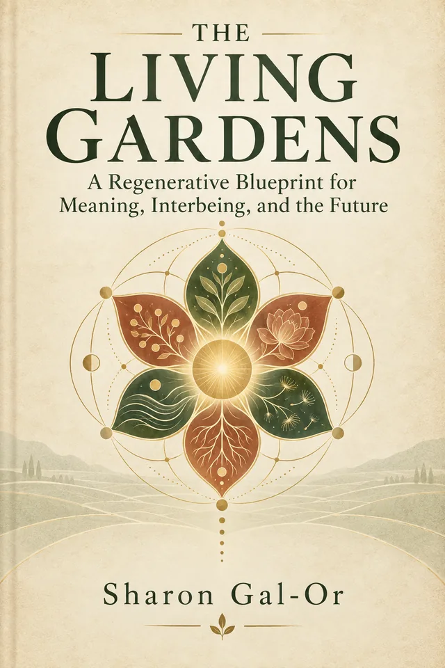

A living inquiry · First edition
We became a global village before we learned how to live as one.
The Living Atlas helps us see what the village needs in order to thrive.
Pick or describe a situation → get a three-part quick map → open the full map when you want more.
Where is life getting stuck?
Don’t just solve the symptom. Nurture the conditions.
Discover the approach →Being · No task to complete
Some things need our presence, not our improvement.
There is room here for rest, attention and the life already worth protecting.
You do not have to produce an answer. Notice something alive near you, if you wish. Stay for as long or as little as you like.
Global seeds · Two starting points
Learn from elsewhere. Grow differently.
Established initiatives to think with, not recipes to copy. The evidence for an initiative’s existence is different from evidence that it will work here.
A small editorial collection for this release. Community submissions, moderation, corrections and version history are planned; there is no submission service yet.
The approach
Look beneath the visible.
A situation rarely has one cause. Follow the relationships, notice what already helps, and leave room for the world to answer back.
Meaning and relationships matter alongside housing, income, safety, public services, resources, power and ecological limits. Belonging cannot substitute for material security or stop coercion by itself. Relief, institutional change and relational repair may need to happen together.
The destination
Capacity to regenerate
People, communities, institutions and ecosystems becoming better able to sustain life, learn, adapt, repair relationships and renew the conditions on which they depend.
The perspectives behind the inquiry
The editorial approach combines systems feedback (Meadows), commons governance (Ostrom), authorship in learning (Freire), real capabilities (Sen), everyday urban life (Jacobs), questions of ownership and power (including Varoufakis), and observation before conclusion (Krishnamurti). These are critical lenses, not endorsements. Their tensions lead to practical commitments: care with rights, participation with authority, technology with contestability, and local agency with legitimate public support. Children, elders, migrants, marginalized residents, practitioners, future generations and non-human life belong in the field of concern. No author or tool can replace their participation.
The project ecosystem
Possibilities taking shape.
Read these as proposals to examine, not proven solutions. Their value depends on access, local governance, maintenance and lived practice.
Author connection: Sharon Gal-Or is the founder and initiator of Central America Living Gardens and Cristo del Pacífico. The related concepts below appear in his supplied materials. Status reflects those materials, reviewed 8 October 2026; no pilot outcomes or official adoption are established here.

The roots of the Atlas
A Moral Atlas for the Human and Civilizational Transition
The Living Gardens is the intellectual and narrative foundation of this Atlas. Its six movements and 42 Gardens explore how meaning, relationships and institutions shape the conditions of life. Being returns after every six active Gardens, opening space for presence rather than another task.
If the Atlas helped you see differently, the book takes you deeper.
Explore the 42 Gardens ↓Six movements. Being at the center.
Open a movement, then a Garden, to read a passage from the book.
A glimpse into each Garden. Spanish titles and excerpts are editorial translations for this Atlas.